XIANGTANGSHAN / NORTHERN QI
响堂山石窟
海外所见
在不同博物馆里看过的佛头、菩萨、有翼兽与大浮雕，沿着原属洞窟重新联系起来。
24 件响堂山归属作品 · 分藏6家美国机构
另有巴黎坐佛 1 件，归属待考
 巨型菩萨头像 · 北响堂中洞
巨型菩萨头像 · 北响堂中洞
大都会艺术博物馆 · 51.52没有符合条件的作品。
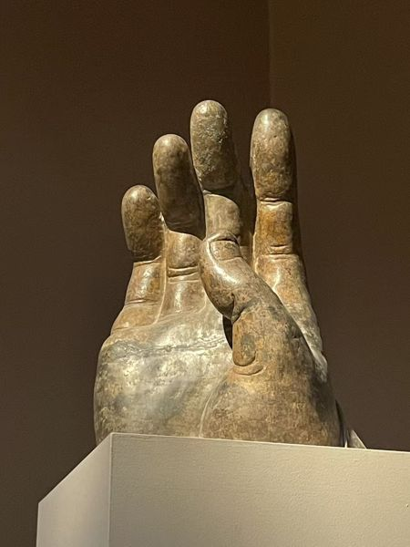
北齐，约550—560年 · 30.81
纽约大都会艺术博物馆
高52.1厘米的佛手残件，提示了洞内巨像的尺度。
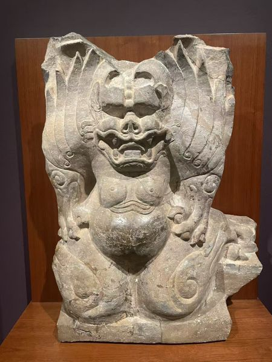
北齐（550—577） · 35-276
纳尔逊－阿特金斯艺术博物馆
跪伏的身体与展开的翼纹，原来处在佛龛柱子的下方。
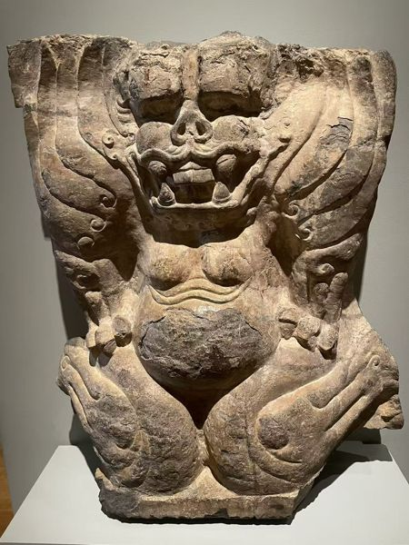
北齐（550—577） · 1957.360
克利夫兰艺术博物馆
三指的手按在膝边，嘴部露出牙齿，翼纹沿肩侧卷起。
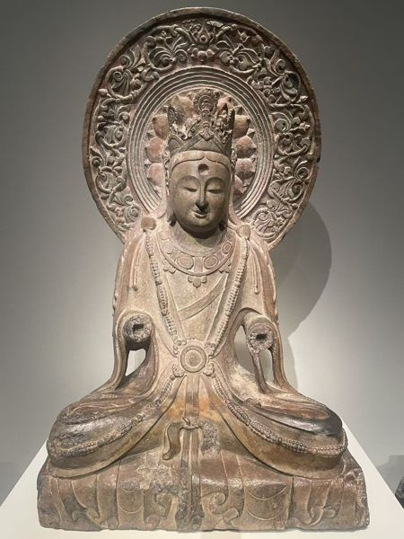
北齐（550—577） · F1913.57
弗利尔美术馆
手臂虽残，冠饰、胸前璎珞和背光仍保存了坐菩萨的装饰层次。
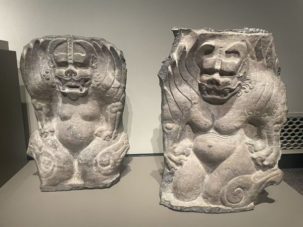
北齐（550—577） · F1953.86
弗利尔美术馆 · 展厅合照局部
双手按膝，宽厚的腹部向前突出，翼纹在肩侧卷起。
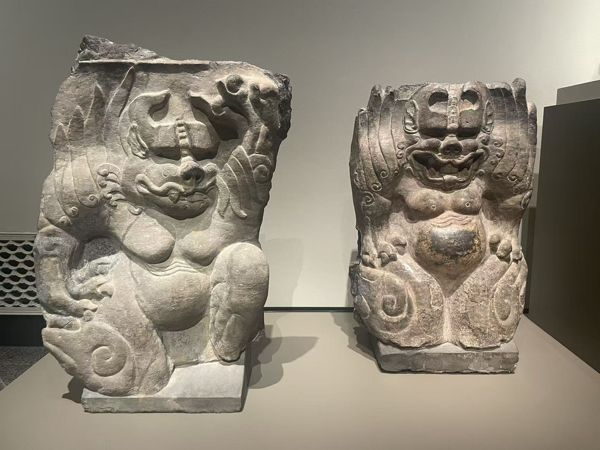
北齐（550—577） · F1953.87
弗利尔美术馆 · 展厅合照局部
一只手抬到头旁，另一只手按膝，身体随石座的转角折转。
北齐（550—577） · F1977.8
弗利尔美术馆 · 展厅合照局部
额鼻中央的竖线、咧开的嘴和膝上的卷纹，都刻得十分醒目。
北齐（550—577） · F1977.9
弗利尔美术馆 · 展厅合照局部
横向露出的整排牙齿占据面部中央，胸腹以下的轮廓逐渐收窄。
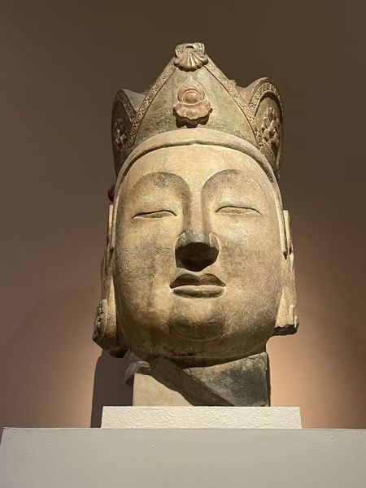
北齐，约565—575年 · 51.52
纽约大都会艺术博物馆
冠饰、耳侧垂带与厚实的颈部，保存在这颗高81.3厘米的头像上。
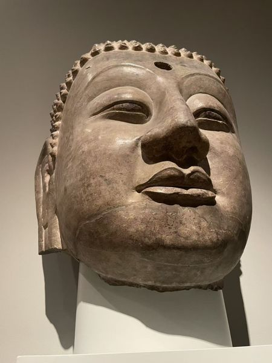
北齐（550—577） · 1923.97
克利夫兰艺术博物馆
巨大而平缓的面部，让细小的发卷显得格外密集。
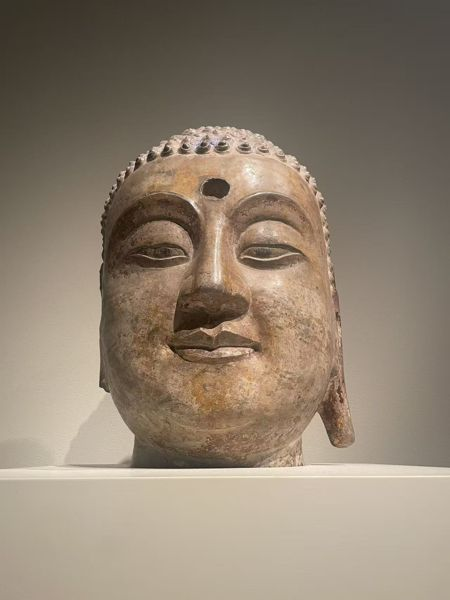
北齐（550—577） · F1913.67
弗利尔美术馆
眉与眼睑刻得轻缓，嘴角略微上扬，颈部以下已经断失。
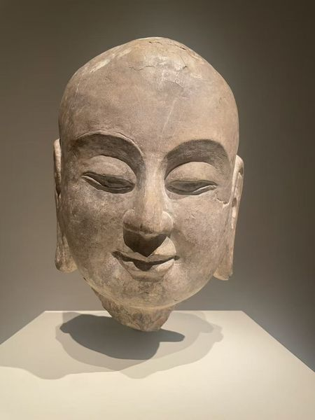
北齐（550—577） · F1913.134
弗利尔美术馆
头顶光素无发卷，眼睑低垂，嘴唇闭合；耳垂贴近残断的颈部。
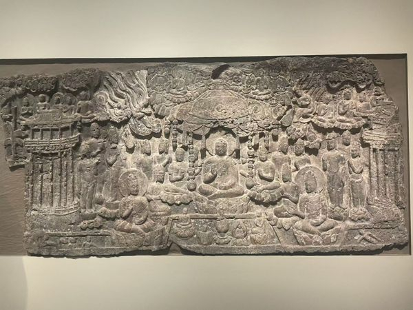
北齐（550—577） · F1921.2
弗利尔美术馆
从中央佛像向下看，莲池中出现了小小的化生人物。
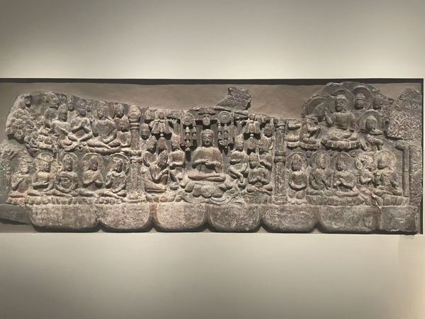
北齐（550—577） · F1921.1
弗利尔美术馆
佛与菩萨分层坐在树木、莲花之间，小人物穿插在较大的身像旁。
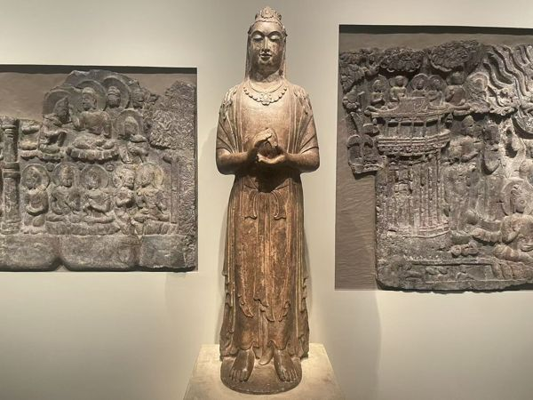
北齐（550—577） · F1968.45
弗利尔美术馆 · 展厅合照局部
项饰沿胸前围成弧线，双手停在身前，长衣褶一直垂到莲座。
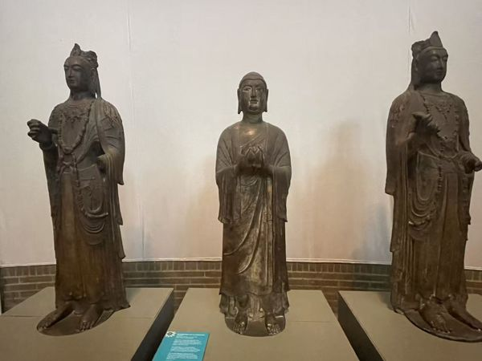
北齐（550—577） · C113
宾夕法尼亚大学博物馆 · 展厅合照局部
冠中小佛像提示了观音的身份，胸前璎珞与衣带长长垂下。
北齐（550—577） · C151
宾夕法尼亚大学博物馆 · 展厅合照局部
双手捧着莲蕾，头部没有冠饰，衣纹厚实而简洁。
北齐（550—577） · C150
宾夕法尼亚大学博物馆 · 展厅合照局部
胸前璎珞层层垂下，细长的衣带一直延伸到腿部。
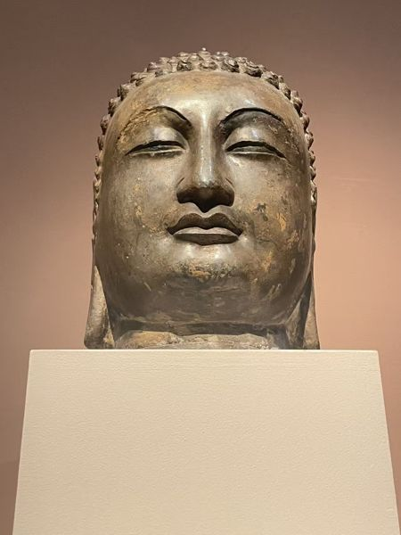
北齐，约565—575年 · 57.176
纽约大都会艺术博物馆
眼帘低垂，双颊圆润；细密的发卷覆盖在平滑的额头上方。
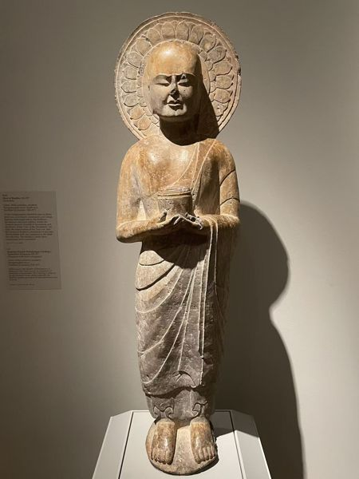
北齐（550—577） · 1972.166
克利夫兰艺术博物馆
剃发的弟子双手持圆筒形容器，衣褶直落到脚边。
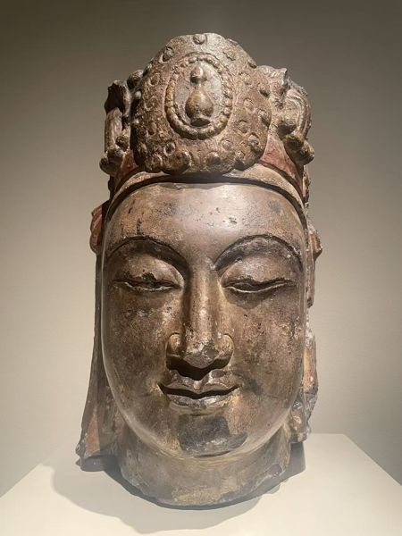
北齐（550—577） · F1916.346a-b
弗利尔美术馆
冠上的瓶形标识，是辨认大势至的重要线索。
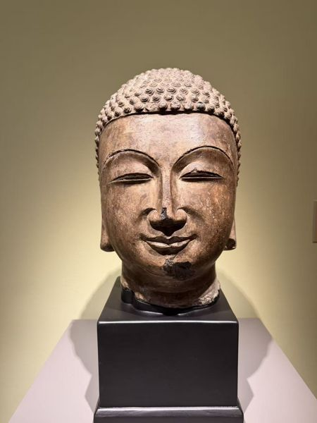
北齐，560年（现场展签） · 51.255
波特兰美术馆
发卷一颗颗凸起，下颌宽圆，双耳贴着头部两侧垂下。
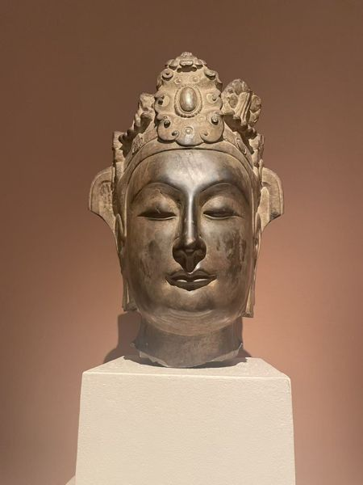
北齐，约565—575年 · 14.50
纽约大都会艺术博物馆
冠沿嵌着圆珠状装饰，耳侧垂带沿着双颊落下。
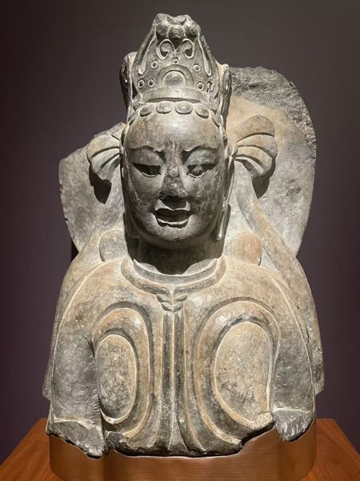
北齐，约570—575年 · 53-48
纳尔逊－阿特金斯艺术博物馆
高冠之下，眉间紧蹙、嘴唇微张，胸甲两侧刻着成对的曲线。